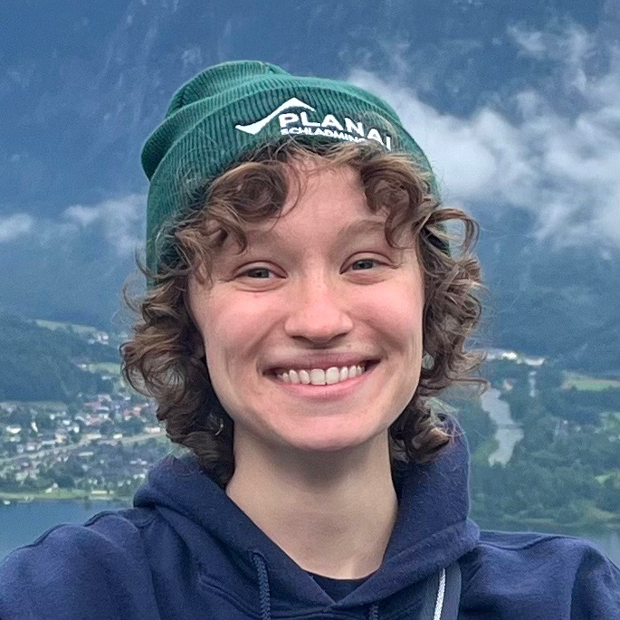

UMD Astronomy PhD student



Hi there! I'm Em,
and I'm a member of the ExoCATS group at at the University of Maryland. I work with Megan Weiner Mansfield to search for atmospheres on rocky exoplanets, specifically probing whether or not planets close to their M-dwarf hosts — famously cantankerous stars — are able to retain atmospheres at all. More generally, I'm interested in how different stellar hosts influence the evolution of their planetary companions.
(But especially their rocky planet companions. I love rocks.)
Outside of research, I love being outdoors (where I can collect rocks), having a minorly snobbish attitude about coffee, and writing. I've also been known to ride a horse on occasion.
I can be contacted via email at epeplins (at) umd.edu. I use he/him pronouns.